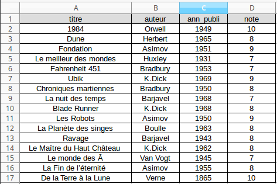
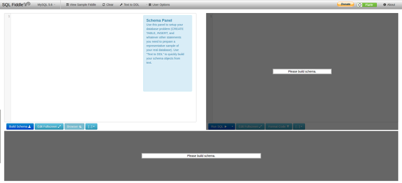
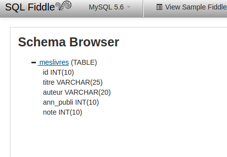
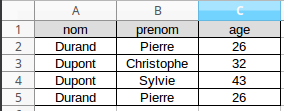
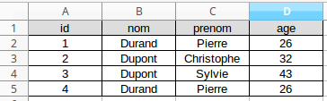

Dans une base de données relationnelle, les données sont stockées sous forme de tableau. Prenons tout de suite un exemple :
Vous désirez créer une base de données qui contiendra les livres que vous avez lus dernièrement. Dans cette base de données nous stockerons :
Si vous stockez ces informations dans un fichier de type tableur, vous pourriez obtenir ce genre de chose :
Le stockage des données dans une base de données relationnelle se fait exactement sur le même principe : à chaque nouvelle ligne correspond une "entrée" (dans notre exemple un nouveau livre), à chaque colonne correspond un "champ" (dans notre exemple les champs sont : titre, auteur, ann_publi et note).
Pour créer une nouvelle base de données, nous allons utiliser un outil en ligne : http://sqlfiddle.com/. Il est important que vous compreniez dès à présent que l'utilisation de cet outil en ligne à un intérêt dans le cadre de tests (ou, comme ici, dans un cadre pédagogique). Si vous désirez créer une base de données avec l'idée de l'utiliser, par exemple, lors de la création d'un site web, il vous faudra utiliser d'autres techniques que nous évoquerons à la fin de ces activités.
Rendez-vous sur le site http://sqlfiddle.com/.
Comme vous pouvez le constater, nous avons 2 fenêtres. La fenêtre de gauche va nous permettre de créer notre de base de données, la fenêtre de droite va nous permettre d'effectuer des requêtes sql sur notre base de données.
ATTENTION : il peut arriver que le site http://sqlfiddle.com/ ne fonctionne pas correctement. Si cela arrive trop souvent, il est possible d'installer et d'utiliser un logiciel qui vous permettra de tout de même suivre ces activités. Je vous recommande sqlitebrowser (http://sqlitebrowser.org/). Il est disponible sous Windows, mac et GNU/Linux (il existe un paquet dans le dépôt officiel d'Ubuntu : "sudo apt-get install sqlitebrowser"). Évidemment, il faudra adapter quelque peu ces activités, mais rien d'insurmontable.
SQL signifie "Structured Query Language", en français "langage de requête structurée". Nous avons donc bien à faire à un langage, mais un langage un peu particulier puisqu'il va uniquement nous permettre d'effectuer des requêtes (une requête va nous permettre, par exemple, de récupérer certaines informations contenues dans la base données selon certains critères).
En résumé, nous avons une base de données relationnelle et un langage de requête (sql) qui va nous permettre de manipuler (écrire, modifier, supprimer ou extraire) les données contenues dans cette base de données. Voilà pourquoi on entend souvent parler de "base de données sql" (base de données que l'on "manipule" à l'aide du langage sql).
Nous allons commencer par créer notre base de données, plus précisément nous allons créer une nouvelle table (une même base de données peut contenir plusieurs tables). Sur le site http://sqlfiddle.com/, dans la fenêtre de gauche, saisissez le code suivant :
CREATE TABLE MesLivres
(id INT, titre VARCHAR(25), auteur VARCHAR(20), ann_publi INT, note INT);
Cliquez ensuite sur le bouton "Build Schema". La table nommée "meslivres" est maintenant créée. Vous pouvez constater que tout s'est bien passé en cliquant sur le bouton "Browser" :
Revenons sur cette première requête :
Le CREATE TABLE meslivres ne devrait pas vous poser de problème : nous créons une nouvelle table nommée "meslivres".
La suite est à peine plus complexe :
nous enchaînons les créations des champs (colonnes) :
Vous avez dû constater que nous avons ajouté un champ : id. Dans une base de données relationnelle, il est absolument fondamental d'avoir un champ qui comporte des entrées toutes différentes les unes des autres. Je m'explique :
Imaginez une table qui possède ces champs et ces entrées :
Dans un premier temps, nous pourrions dire que nous avons saisi 2 fois la même personne. Mais en y réfléchissant un peu, il n'est pas du tout improbable d'avoir 2 homonymes ayant le même âge. Nous avons bien ici deux personnes différentes.
Le système qui gère la base de données est incapable de distinguer les 2 "Pierre Durand", ce qui dans le cas d'une base de données relationnelle est strictement interdit. Nous allons donc ajouter un champ (une colonne) supplémentaire : "id" ("id" comme identifiant). Ce champ sera incrémenté d'une unité à chaque nouvelle entrée :
Il n'existe plus 2 entrées possédant les mêmes valeurs pour tous les champs : nous avons un "Pierre Durand" avec un "id" égal à 1 alors que l'autre "Pierre Durand" a un "id" égale à 4.
Ce champ qui diffère pour chaque entrée est appelé "clé primaire".
Dans notre requête de création de la table "meslivres", à côté des noms des champs, vous avez dû remarquer les expressions INT, VARCHAR(25) et VARCHAR(20). Ces expressions permettent de définir les types des données contenues dans un champ. Les champs id, ann_publi et note devront obligatoirement contenir des données qui seront des nombres entiers ("INT"=integer, entier en français). Les champs titre et auteur contiendront des données qui seront des chaînes de caractères ("VARCHAR"). La parenthèse qui suit le mot clé "VARCHAR" contient le nombre maximum de caractères. VARCHAR(20) signifie : "chaîne de caractères constituée, au maximum, de 20 caractères". Il serait tentant de mettre une valeur élevée afin d'être "tranquille" mais, ne perdez pas de vue que plus ce nombre est important, plus la donnée prendra de la place sur un disque dur et plus le traitement de cette même donnée sera long à effectuer. Prenez donc un peu de marge pour éviter les problèmes, mais n'exagérez pas...
Il existe d'autres types de données possibles : "TIME", "DATETIME", "BOOLEAN", "FLOAT"...mais dans ces activités nous utiliserons uniquement "INT" et "VARCHAR".
La table "meslivres" a bien été créée, mais, pour l'instant, elle est vide. Effectuons une requête permettant de "peupler" notre table avec des données :
Toujours dans la fenêtre de gauche, écrivez :
CREATE TABLE meslivres
(id INT, titre VARCHAR(25), auteur VARCHAR(20), ann_publi INT, note INT);
INSERT INTO meslivres
(id,titre,auteur,ann_publi,note)
VALUES
(1,'1984','Orwell',1949,10),
(2,'Dune','Herbert',1965,8),
(3,'Fondation','Asimov',1951,9),
(4,'Le meilleur des mondes','Huxley',1931,7),
(5,'Fahrenheit 451','Bradbury',1953,7),
(6,'Ubik','K.Dick',1969,9),
(7,'Chroniques martiennes','Bradbury',1950,8),
(8,'La nuit des temps','Barjavel',1968,7),
(9,'Blade Runner','K.Dick',1968,8),
(10,'Les Robots','Asimov',1950,9),
(11,'La Planète des singes','Boulle',1963,8),
(12,'Ravage','Barjavel',1943,8),
(13,'Le Maître du Haut Château','K.Dick',1962,8),
(14,'Le monde des Ā','Van Vogt',1945,7),
(15,'La Fin de l’éternité','Asimov',1955,8),
(16,'De la Terre à la Lune','Verne',1865,10);
Une fois le code ci-dessus "copier-coller" dans la fenêtre de gauche, cliquez sur le bouton "Build Schema". Voilà, la table meslivres devrait maintenant contenir nos données.
À partir de maintenant, nous n'utiliserons plus la fenêtre de gauche, tout se passera dans la fenêtre de droite (à part quand vous voudrez repartir d'une base de données "toute propre" : il vous faudra de nouveau "copier-coller" le code ci-dessus dans la fenêtre de gauche et cliquer sur le bouton "Build Schema").